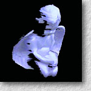
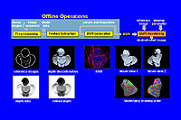

 Binary-Space-Partitioned Images for Resolving Image-Based Visibility
, , , , and
IEEE Transactions on Visualization and Computer Graphics, Vol. 10, No. 1, January-February 2004, pp. 58-71.Abstract
- We propose a novel 2D representation for 3D visibility sorting, the Binary-Space-Partitioned Image (BSPI), to accelerate real-time image-based rendering. BSPI is an efficient 2D realization of a 3D BSP tree, which is commonly used in computer graphics for time-critical visibility sorting. Since the overall structure of a BSP tree is encoded in a BSPI, traversing a BSPI is comparable to traversing the corresponding BSP tree. BSPI performs visibility sorting efficiently and accurately in the 2D image space, by warping the reference image triangle-by-triangle, instead of pixel-by-pixel. Multiple BSPIs can be combined to solve `disocclusion', when an occluded portion of the scene becomes visible at a novel viewpoint. Our method is highly automatic, including the tensor voting preprocessing step that generates candidate image partition lines for BSPIs, filters the noisy input data by rejecting outliers, and interpolates missing information. Our system has been applied to a variety of real data, including stereo, motion, and range images.
Video Presentation
- The following presentation animation explains our algorithm with running examples and animations.

Download Paper
- Acrobat: bspi.pdf (size: 1.5MB)
Related Publications